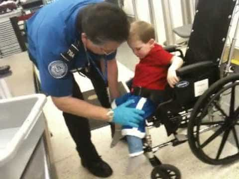

Daryush "Roosh" Valizadeh created ROK in October 2012. You can visit his blog at RooshV.com or follow him on Twitter and Facebook.


After the terrorist attacks in France last week, in which seventeen citizens and policemen lost their lives, it’s difficult to find mainstream commentators in America or England discussing methods to prevent future attacks. The reason is clear: stopping Islamic terrorism would involve profiling Muslims in a way that goes against the hollow and meaningless “unity” narrative our elites have embraced. Their recent remarks are infused with less testosterone than that of a horny beta male trying to lay a girl on Tinder:
“I ask you to remain united – it’s our best weapon. It shows we are determined to fight against anything that can divide us. We must not be divided.” —Francois Hollande
“I’ve accepted President Hollande’s invitation to join the Unity Rally in Paris this Sunday – celebrating the values behind #CharlieHebdo.” —David Cameron
“I want the people of France to know that the United States stands with you today, stands with you tomorrow.” —Barack Obama
Such language, and the flaccid action that is sure to follow, will do nothing to prevent another attack. Instead of giving practical solutions on stopping terrorism, or at least decreasing it, we instead have to pretend that all humans are inherently good and that by treating Muslims with more love, unity, and openness, they will lay down their arms (and somehow forget their Syrian war training) to sip on foamy cappuccinos and nibble on French baguettes and foie gras. If French culture was more enticing than 72 virgins, this method may have a shot, but alas, too much coffee does give many people an uncomfortable case of the jitters.
I propose a different method, but before I do, those in the West have to ask themselves a question: Do you want to halt or decrease Islamic terrorism in your country or not? If you don’t then continue on your current progressive track by allowing millions of immigrants into your country with no program of integrating them into your cultural value system. In exchange for having your multicultural utopia and kebab shops, you have an increased chance of being shot in the head with an AK-47 or blown to bits if you happen to be in the wrong place at the wrong time.
To end Islamic terrorism in the West, I earnestly propose a program called Cartoon Sensitivity Examination (CSE). It must be required for all Muslims who intend to visit or inhabit a Western country. Let’s use France as an example for how the program would work.
At border control, a follower of Islam will be politely escorted to a cartoon examination room. He is first shown two anti-semitic cartoons and asked for his opinion. Then he is shown two tasteless Jesus cartoons and again asked for his opinion. Finally, he is shown two cartoons of the prophet Mohammad in the most debased and vulgar manner, having sex with an animal, fellating a pig, or engaging in homosexuality with a Jew. Special biometric cameras will examine his reaction for rage. The border control agent will then ask him the following questions:
a) “Are you offended by the cartoon against your prophet?”
b) “Do you believe these cartoons should not have been published because of the offense it may cause the Muslim population?”
c) “If you were president of France, would you pass a law prohibiting publication of these cartoons?”
d) “If your brethren decided to kill the cartoonists, do you believe Allah would send them to paradise, or at least thank them for their service?”
If the immigrant answered yes to question C or D, he would absolutely not be allowed entry into France. He would be escorted to a return flight back to his homeland.
If the immigrant answered no to question C or D, but biometric data conflicted with his answers, he must be subjected to a rigorous background search, and if he passes the checks, he must agree to close surveillance by the state security apparatus along with voluntary check-ins. But if he is conclusively linked to radical imans or mosques that have produced terrorist activity in the past, he will not be allowed entry. This will match the current accepted behavior in the West of a man falsely accused of rape being denied employment opportunities.
Due to my Muslim name (my father is Iranian), I would also be subject to such an examination. I would answer no to all four questions, and biometric data would reveal not an extra heart beat of perturbation from looking at them. I would have no problem with taking the exam even in the United States, of which I am a citizen. My father would also pass this test; he is even more overtly American that I am in some respects, fully acclimatized to his adopted home.
My proposal is that simple, because being grossly offended at cartoons is the quickest, cheapest, and most effective way we can identity fanatics who are wholly incompatible with Western notions of free speech and free press. Look no further than the 2005 cartoon controversy in the Muslim world which resulted in riots, murders, and over 100 senseless deaths, all because of cartoons. Not a single soul should be allowed into a nation while not adhering to its most basic heritage and principles of law, and who can so easily become motivated to gunning down artists or other innocent citizens because of an editorial drawing. They must be kept out for the protection of society, and if you disagree, maybe you do not care about the safety of that society.
My program gets trickier for natural-born Muslims. I propose that they must undergo the cartoon sensitivity exam at 18 years of age, similar to how men in America must register for the selective service at that time, and then re-take the exam every 3-5 years thereafter. All welfare and governmental benefits will be withheld from those who attempt to skirt the examination, and since Muslim immigrants seem to be heavily dependent on generous welfare, I expect a 99% compliance rate, especially if we withhold welfare from mothers whose sons did not submit to examination.
If a natural-born Muslim failed the examination, and shows that radicalization is deep in his heart, he must be surveilled closely or imprisoned indefinitely. You earlier said you wanted to end terrorism in your country, right? I’m pretty sure I saw you holding a Je Suis Charlie placard at the unity march earlier. Well, this is how you do it: get rid of those who possess the same anger and motivation to kill that previous terrorists possessed, and ensure that this profiling is only done on Muslims.. Un-democratic laws must be applied on people who don’t believe in democracy if you want to allow them to live in your country.
What the US did after 9/11 is an example of how not to react to a terrorist act. Instead of only profiling Muslims (including recently converted Muslims), they spied on every citizen within its borders, even collecting meta data on postal mail. Maybe this protected us obliquely, but its main objective was to surveil those who threaten the very authority of the state and to tighten its tyrannical control over the populace. A non-Muslim citizen should not be inconvenienced one extra minute of the year for actions that he has zero propensity to execute. This includes young blond children.

By now you’ve probably realized that cartoon sensitivity examinations, surveilling, and imprisoning Muslims will come at a hefty monetary cost. This is true, but then we have to ask ourselves the following: why do we need low-value immigrants who aren’t doctors, engineers, or other advanced professions in a Western country when there is no hope they can improve that society? Why are we opening our doors to immigrants whose belief in superstition and fairy tales is immune to basic rational thought, and who are so baby sensitive to words and drawings that they believe killing others is the best recourse to relieve their hurt feelings?
The middle class French citizenzy needs Muslims as bad as middle class Americans need Mexicans. In other words, they don’t. The elite requires these armies of perpetually offended immigrants to keep wages low and destroy national identity in favor of globalization, and so the cost to keep out undesirable people would be greater than any value they bring into your neighborhood or city. Can we vote instead on opening our borders to Polish and Chinese immigrants, who have shown to solemnly respect the nations they immigrate to? Otherwise, we may need to think twice about letting in Somali refugees or Yemeni men whose professional resume contains a bit too much mention of his studies on the Koran.
The best way to identify if a proposed policy would work is to apply it to the past. Would my cartoon examination proposal stop the Charlie Hebdo attacks? The Boston bombing? The Lee Rigby beheading in England? 9/11? Well, I don’t think it’s a stretch to say that most of those terrorists would probably attack the examiner directly when shown the offensive cartoons. Maybe it’s not elegant or high-tech, but if you want to identify and keep out murderous idiots, simply show them a cartoon of their prophet having gay sex. Identify these fanatics, ship them back home or monitor them closely, and enjoy your Western civilization, or at least what’s left of it.
Don’t Miss: The Charlie Hebdo Terrorist Attack Fires Shots At The Liberal Narrative